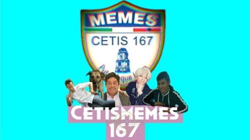

El dia 14 de febrero se realico un evento muy emotivo para todas las comunidad del plantel, en el cual, participaron, tanto personal docente,academico y estudiantil.
Pero sabes por que se celebra en varios países del munco con gran entusiasmo y alegria el Dia de San vallenti?.,pues cada 14 de febrero se celebra ahora san valentin del munco con gran entusiasmo y alegria el dia de san valentin.
Un dia muy especial para muchos, donde se resalta la importancia del amor y que, pase a la vreencia de su origen comecial.. viene de mucho antes.
Concretamente desiglo III en roma y la muerte de valentin, un sacerdote sentencia por celebrar en secreti matrimonios de jóvenes enamaorados.
Se casaron entre profesores
Teniamos jueces bilingues
Muchisimas cartas
Pero ninguna prar su querida profesora!